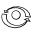
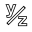
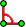
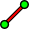
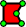
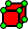
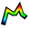
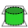

<div class="row">
  <div class="col-sm-4">
    <h2>Option 1</h2>
    <h2>Option 2</h2>
    <h2>Option 3</h2>
    <h2>Option 4</h2>
  </div>
  <div class="col-sm-8">
<!-- -->

<script src="../../potree-1.3/libs/three.js/build/three.js"></script>
<script src="../../potree-1.3/libs/other/stats.min.js"></script>
<script src="../../potree-1.3/libs/other/dat.gui.min.js"></script>
<script src="../../potree-1.3/libs/other/BinaryHeap.js"></script>

<script src="../../potree-1.3/build/js/potree.js"></script>
<script src="../../potree-1.3/examples/js/ProgressBar.js"></script>

<!-- uncomment this to debug changes to the individual js files -->

<script src="../../potree-1.3/src/PointCloudOctree.js"></script>
<script src="../../potree-1.3/src/PointCloudOctreeGeometry.js"></script>
<script src="../../potree-1.3/src/loader/POCLoader.js"></script>
<script src="../../potree-1.3/src/loader/BinaryLoader.js"></script>
<script src="../../potree-1.3/src/loader/LasLazLoader.js"></script>
<script src="../../potree-1.3/src/materials/PointCloudMaterial.js"></script>
<script src="../../potree-1.3/src/materials/EyeDomeLightingMaterial.js"></script>
<script src="../../potree-1.3/src/EarthControls.js"></script>
<script src="../../potree-1.3/src/OrbitControls.js"></script>
<script src="../../potree-1.3/src/FirstPersonControls.js"></script>
<script src="../../potree-1.3/src/utils/ProfileTool.js"></script>
<script src="../../potree-1.3/src/utils/MeasuringTool.js"></script>
<script src="../../potree-1.3/src/utils/TransformationTool.js"></script>
<script src="../../potree-1.3/src/utils/VolumeTool.js"></script>
<script src="../../potree-1.3/src/utils.js"></script>
<script src="../../potree-1.3/src/LRU.js"></script>
<script src="../../potree-1.3/src/TextSprite.js"></script>
<script src="../../potree-1.3/src/Features.js"></script>
<script src="../../potree-1.3/src/arena4d/PointCloudArena4D.js"></script>
<script src="../../potree-1.3/src/arena4d/PointCloudArena4DGeometry.js"></script>

<!-- INCLUDE ADDITIONAL DEPENDENCIES HERE -->
<!-- INCLUDE SETTINGS HERE -->
<!--<script src="../../potree-1.3/libs/plasio/js/laslaz.js"></script>
<script src="../../potree-1.3/libs/plasio/vendor/bluebird.js"></script>
<script src="../../potree-1.3/build/js/laslaz.js"></script>
-->

<!-- HEADING -->
<div class="info" style="position: absolute; left: 300px; right: 300px; top: 10px; text-align: center;">
  <a href="http://potree.org" target="_blank">potree.org</a><br>
  Point cloud courtesy of <a href="http://www.sigeom.ch/" target="_blank">sigeom sa</a><br>
</div>

<!-- INFOS / STATS -->
<div id="lblNumVisibleNodes" class="info" style="position: absolute; left: 10px; top: 80px; width: 400px; color:white"></div>
<div id="lblNumVisiblePoints" class="info" style="position: absolute; left: 10px; top: 100px; width: 400px; color:white"></div>
<div id="lblMessage" class="info" style="position: absolute; left: 10px; bottom: 0px; width: 400px; color:white"></div>

<!-- TOOLS -->
<div id="tools" style="position: fixed; width: 400px; bottom: 10px; right: 10px">
  
  
  
  
  
  
  
  
  
  
  
</div>

<div id="renderArea" style="height: 700px"></div>

<script>
  
  var sceneProperties = {
    path: "http://5.9.65.151/mschuetz/potree/resources/pointclouds/pix4d/matterhorn/cloud.js",
    cameraPosition: null,
    cameraTarget: null,
    sizeType: "Adaptive",
    quality: "Squares",
    fov: 75,
    material: "RGB",
    pointLimit: 1,
    navigation: "Orbit",
    pointSize: 1,  
    useEDL: false,
  };
</script>
<script src="../../potree-1.3/examples/js/viewer.js"></script>


<!-- -->
  </div>
</div>
